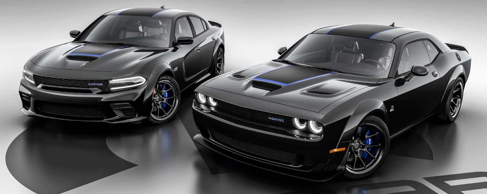

BIENVENIDOS
Dodge, el pionero de los muscle cars, ha sido un símbolo de poder y rendimiento.
Muscle car es un automóvil de tamaño medio o grande, con rasgos deportivos y «musculosos», cualidades que lo hacen muy llamativo y le dan un aspecto «agresivo», con un motor muy potente y un precio de compra relativamente barato y, desde luego, más accesible al gran público que otros deportivos. Esto a su vez lo hace de los mejores coches para poder hacer competiciones a nivel salchicha.
Entre las características comunes «no escritas» que también tienen normalmente los muscle cars están: procedencia norteamericana, no ser demasiado lujosos, normalmente ser cupés pero no es requisito, tener tracción trasera y ser impulsados por motores V8 y en ocasiones V6 o L6. Por extensión también han existido un gran número de sedanes, o incluso rancheras con motores de alta potencia, catalogados popularmente como muscle cars tal como el Dodge Charger o el Chevrolet Nova.
HISTORIA
Desde los años 60, Dodge ha dominado las pistas con sus icónicos modelos.
Si bien la HISTORIA DE LOS MUSCLE CARS es muy ambigua y puede existir más de una versión, lo que sí queda claro es que se trata de un auto de tamaño mediano que bajo el cofre lleva montado un motor de 8 cilindros. El soporte adecuado para su alto desempeño se logra a través de suspensiones y frenos especiales.
Los muscle cars surgen de la necesidad de hacer accesibles los autos utilizados en las carreras en las que participaban tanto entusiastas adinerados como constructores de carros. Para que el reto fuera más parejo, se estableció una norma para que los fabricantes realizaran versiones que podía adquirir el público general.
El término muscle car nace de un hito mercadológico creado por un personaje emblemático: John Z. DeLorean, sí, el mismo que hizo el auto de Volver al Futuro. Él se encargó de popularizar en América el término italiano GTO (Gran Turismo Omologato), que se refería a un auto rápido, ágil y cómodo.
MODELOS CLÁSICOS

CHARGER SRT HELLCAT REDEYE
Cuando decimos que Charger SRT Hellcat Redeye está impulsado por el demonio, lo decimos en serio, pues bajo el capó se encuentra el imponente motor HEMI V8 sobrealimentado del legendario Challenger SRT Demon 2018. Esta maquinaria es capaz de generar 797 caballos de fuerza (hp) y 707 lib-pie de torque.
Con tal motor puede alcanzar una velocidad de 326 km/h, acelerar de 0 a 100 km/h en tan solo tres segundos y recorrer el cuarto de milla en 10.6 segundos. Comparado con Charger SRT Hellcat, la versión Redeye es 1.2 segundos más rápida en un recorrido de 2.1 millas, lo que equivale a una distancia de siete autos.

DURANGO SRT HELLCAT
CDurango SRT Hellcat es todo un sueño hecho realidad: es una SUV con tres filas de asientos y espacio para toda la familia, tiene una capacidad de arrastre inigualable de 3,946 kg y, por si fuera poco, es capaz de dejar atrás al resto de los autos, pues alcanza los 289 km/h. Una perfecta combinación de espacio y potencia.
Esta impresionante camioneta tiene un motor HEMI V8 sobrealimentado, de 6.2 litros, que genera 710 hp y 645 lb-pie de torque. Con esta maquinaria dentro, puede ir de 0 a 100 km/h en 3.5 segundos y recorrer el cuarto de milla en tan solo 11.5 segundos.

CHALLENGER SRT SUPER STOCK
Challenger Demon y Hellcat Redeye ya habían dejado huella y, sin duda alguna, el nuevo Challenger SRT Super Stock lleva las cosas un paso más allá. Aunque usa el mismo HEMI V8 de 6.2 litros que Hellcat Redeye, su tren motriz recalibrado le da una potencia inigualable de 807 hp y 707 lb-pie de torque.
Este muscle car recibe su nombre la categoría Super Stock de las carreras drag (arrancones), conformada por autos que, aunque lucen normales, en realidad se encuentran fuertemente modificados para competir. Un nombre ideal para un auto que alcanza los 270 km/h, que puede ir de 0 a 100 km/h en 3.25 segundos y que puede recorrer el cuarto de milla en 10.5 segundos, a 210 km/h.
CONTACTOS
info@dodge.com
Teléfono
+1-800-DODGE
Dirección
c. 21 # 8461 Ed. Alessandria P1. La Paz